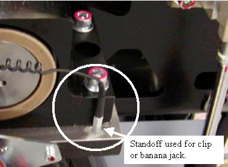

Operating Documentation
Direction 5193574-800, Rev# 22
LightSpeed 7.X Service Methods
Module Version 2.0, Version Date 4/17/14
Operating Documentation |
This document defines the approved ESD grounding points for the CT Gantry.
| Last Revised: | 22 November 2013 |
The CT gantry has defined ESD attachment points that allow easy attachment for banana clip and alligator clip style connections. There are points on the stationary frame on each side of the gantry and rotating assembly behind the DAS plate. The stationary frame locations should always be used if the length of your ESD strap is sufficient.
Illustration 1: Gantry Right side clip example

Illustration 2: Gantry right side banana jack example

Illustration 3: Gantry left side connection

Illustration 4: DAS plate backside ESD connection points